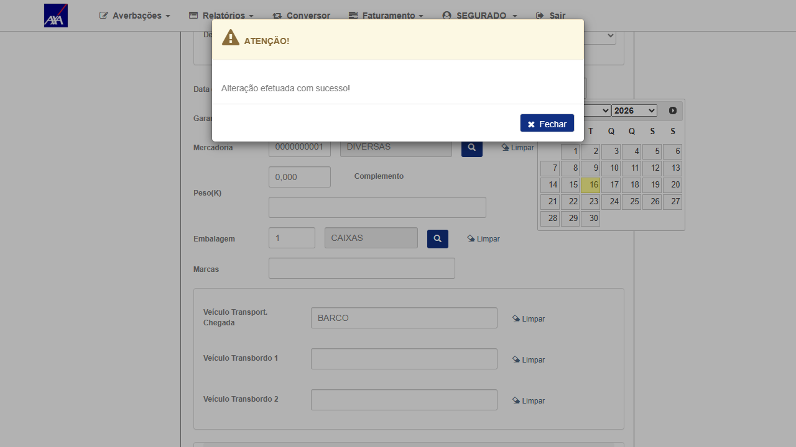
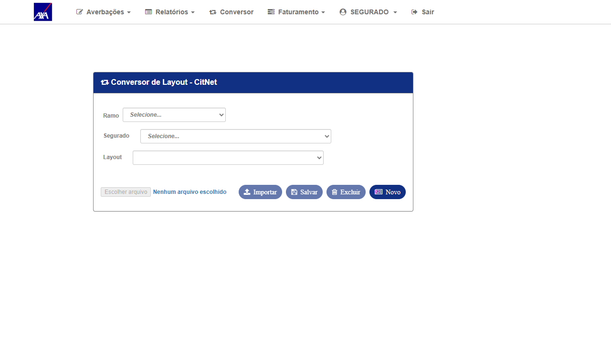
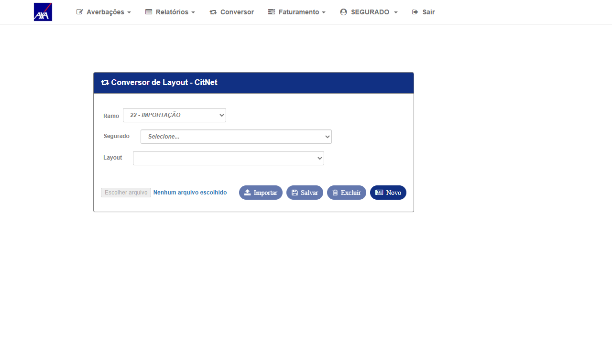
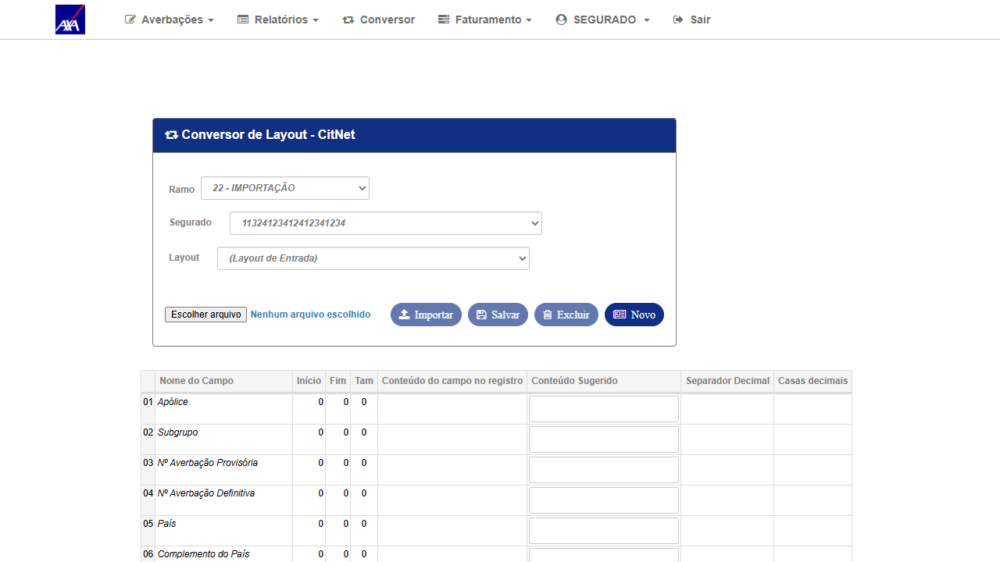
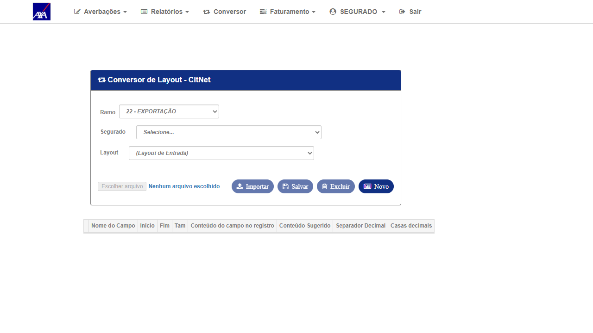

1. Resultado do Reteste
| # | Ação | Resultado obtido | Status |
|---|---|---|---|
| 1 | Login com perfil SEGURADO (SEGURADO / Segurado1234567!a) no CITNET AXA ALFA e clicar em "Conversor" no menu | Tela do Conversor carregou normalmente — sem NullReferenceException. Ramos disponíveis: 21 (Nacional), 22 Exportação, 22 Importação, 32 RCTR-VI, 52 RCTA-C, 54 RCTR-C, 56 RCA-C, 59 RCV | ✓ OK |
| 2 | Selecionar ramo 22 - Importação; selecionar segurado; verificar layouts disponíveis | Layouts carregaram: "axa", "Teste" e opção de Novo Layout — campo de upload de arquivo habilitado | ✓ OK |
| 3 | Trocar para ramo 22 - Exportação; verificar se página mantém funcionalidade | Ramo Exportação selecionado sem erros; layouts recarregados corretamente | ✓ OK |
2. Confirmação de Sucesso
Tela do Conversor acessada com perfil SEGURADO — sem exceção de servidor. Ramos internacionais (22 Importação / 22 Exportação) selecionáveis e funcionais. Layouts listados corretamente para o segurado selecionado.
Contraste com bug #7381 (ASSESSORIA): O bug idêntico no perfil ASSESSORIA continua falhando com NullReferenceException no mesmo controller (Conversor/Conversor). O fix parece ter sido aplicado especificamente para o perfil SEGURADO, enquanto o perfil ASSESSORIA ainda aguarda correção.
3. Dados do Cenário
| Campo | Valor |
|---|---|
| Ambiente | CITNET AXA ALFA — https://axa-hml-faturamento.nsseg.com.br/alfa/citnet/ |
| Perfil / Usuário | SEGURADO — SEGURADO / Segurado1234567!a |
| Data do reteste | 16/06/2026 |
| URL testada | /alfa/citnet/Conversor/Conversor |
| Ramos testados | 22 - Importação · 22 - Exportação |
| Exception | Nenhuma — tela carregou normalmente |
| Resultado | PASS — Fix validado; Conversor Internacional funcional com SEGURADO |
4. Evidências
Clique nas imagens para ampliar.

01 — OK
Login SEGURADO confirmado no AXA ALFA
Login SEGURADO confirmado no AXA ALFA

02 — OK
Tela do Conversor carregou sem erros — todos os ramos disponíveis
Tela do Conversor carregou sem erros — todos os ramos disponíveis

03 — OK
Ramo 22 - Importação selecionado sem exceção
Ramo 22 - Importação selecionado sem exceção

04 — OK
Segurado selecionado; lista de segurados carregada normalmente
Segurado selecionado; lista de segurados carregada normalmente

05 — OK
Layouts do ramo Importação listados (axa, Teste, Novo Layout) — upload habilitado
Layouts do ramo Importação listados (axa, Teste, Novo Layout) — upload habilitado

06 — OK
Ramo 22 - Exportação também funcional — layouts recarregados sem erros
Ramo 22 - Exportação também funcional — layouts recarregados sem erros
5. Conclusão
O bug foi corrigido para o perfil SEGURADO. O Conversor Internacional carrega normalmente no AXA ALFA, sem NullReferenceException. Os ramos 22-Importação e 22-Exportação ficam disponíveis para seleção e os layouts são carregados corretamente após selecionar o segurado.